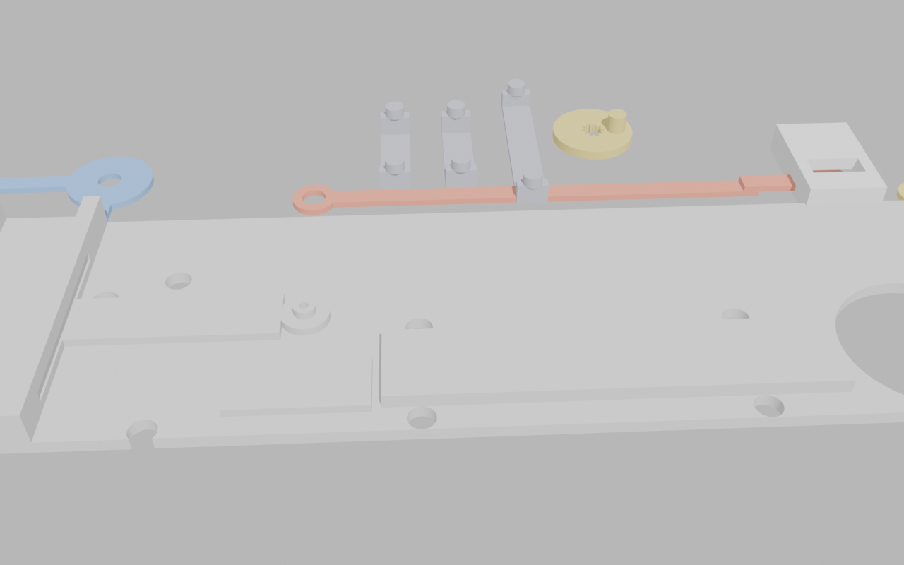
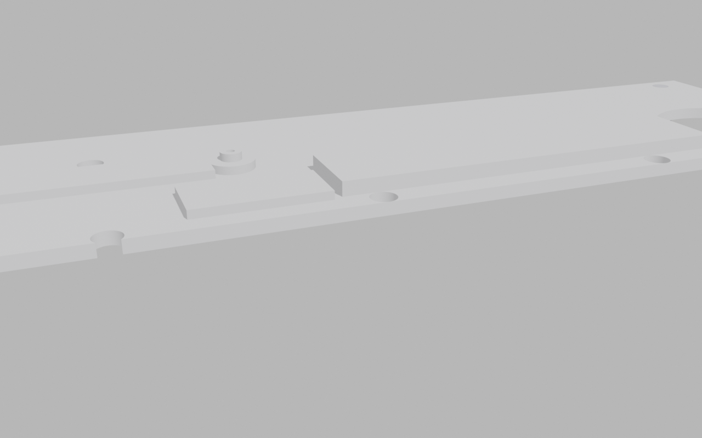
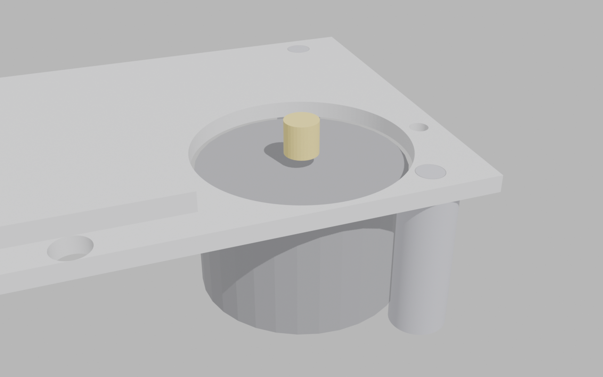
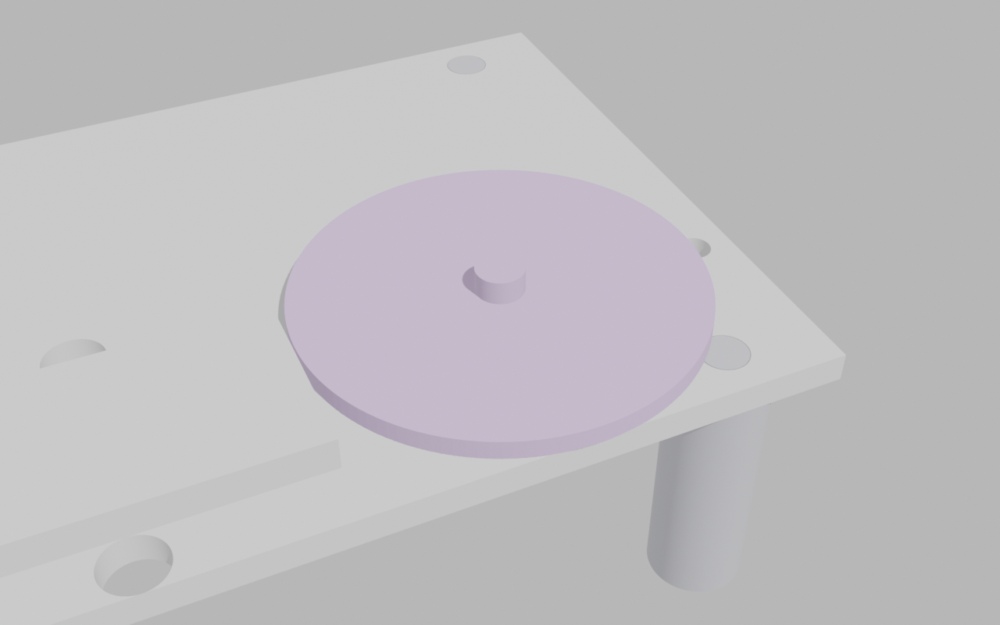
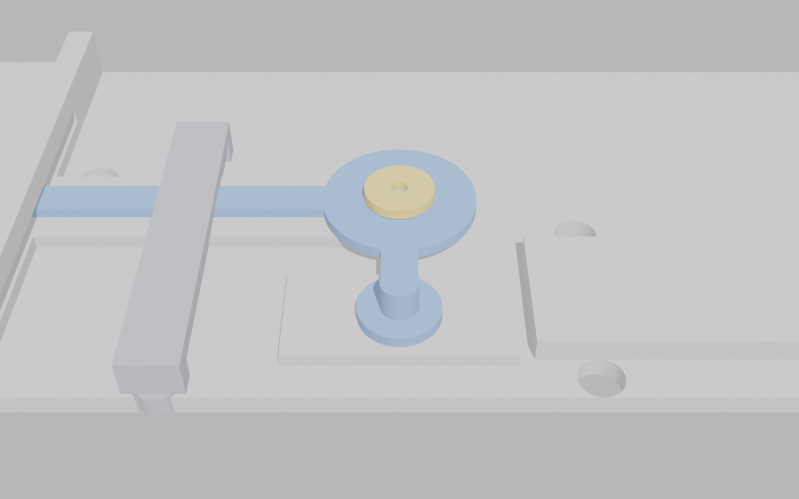
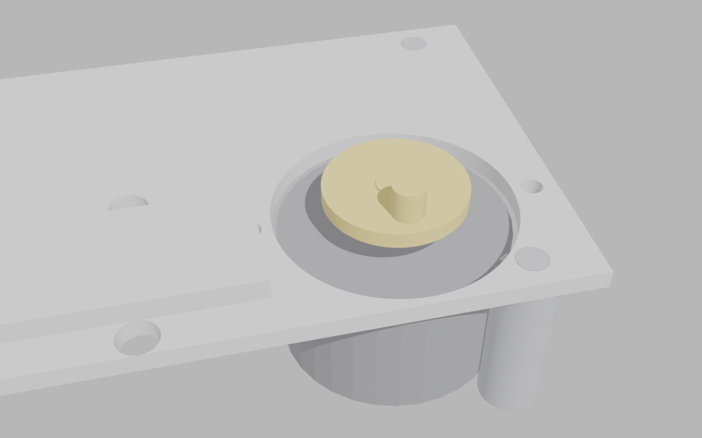
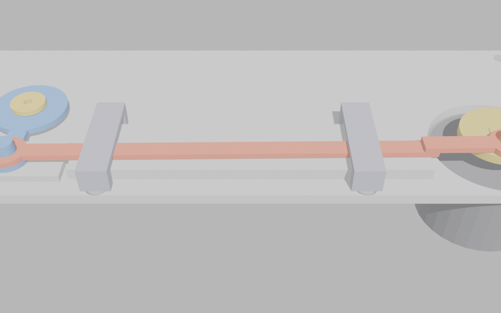
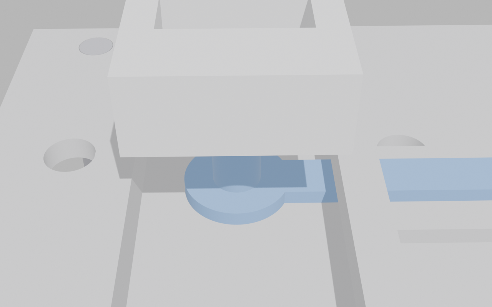
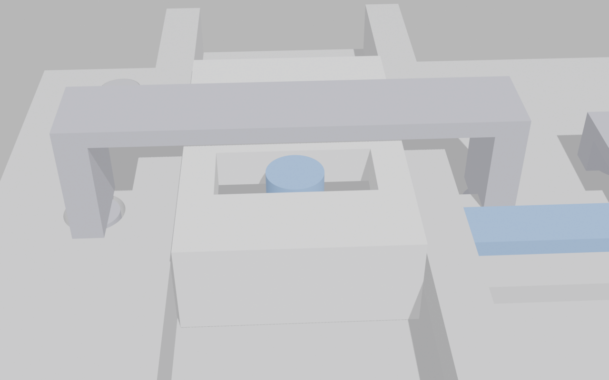
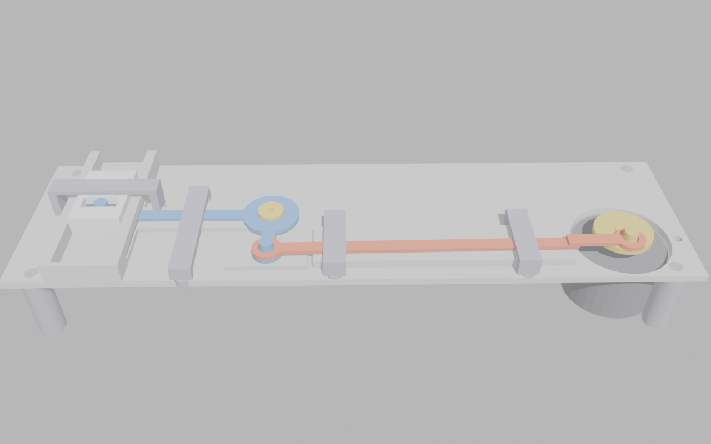

Стол печати: Print3mf\21_palka_test.3mf — 17 деталей, все печатаются
как лежат. Это одна станция привода: мотор → кривошип → спица-шатун →
треугольник → штырь в щели тележки (кулиса: высокий штырь плеча ходит
прямо в щели палубы — ни серьги, ни губок, ни шатуна).

| № | Деталь | Сколько | Цвет на картинках |
|---|---|---|---|
| 1 | Плита-стенд 255×70 | 1 | серая |
| 2 | Ножка-столбик с шипом | 4 | тёмно-серые |
| 3 | Треугольник (два плеча + диск) | 1 | синий |
| 4 | Спица-шатун (длинная полоска ~144 мм, две дырки, хвост приподнят ступенькой) | 1 | красная |
| 5 | Кривошипы со звёздочкой и пальцем-бугорком: r6 / r6.5 / r7 | 3 | жёлтые |
| 6 | Тележка-ползун (в палубе — сквозная щель-кулиса) | 1 | белая |
| 7 | Заглушка-«фальшмотор» | 1 | для игры без мотора |
| 8 | Мостик-прижим спицы (штыри в ямки) | 2 | серые |
| 9 | Низкий мост (над длинным плечом) | 1 | серый |
| 10 | Высокий мост (над тележкой) | 1 | серый |
| 11 | Шайба оси треугольника (+ винт M2) | 1 | жёлтая |

Переверни плиту. По углам — четыре отверстия. Вставь шип каждой ножки в отверстие до упора (плотно, можно капнуть клея). Поставь плиту на ножки — она стоит как столик, под ней место для мотора.

Возьми NEMA14. Снизу плиты вставь его валом вверх в большой круглый колодец — вал с шестернёй выйдет над плитой. Поверни мотор так, чтобы уши легли вдоль плиты, и прикрути 2 винтами M3 через отверстия рядом с колодцем (самонарез прямо в уши).


На стойке плиты сверху уже торчит бугорок. Надень на него треугольник центральной дыркой диска. Длинное плечо смотрит влево (к каналу тележки), короткое — к ближнему краю плиты. Крутится пальцем свободно? Отлично. Бугорки на концах его плеч смотрят вверх.
Теперь запри узел: положи шайбу на бугорок оси и вкрути винт M2 в дырочку в его торце (самонарез). Затем защёлкни низкий мост штырями в ямки поперёк длинного плеча — плечо будет ходить под ним.

Возьми кривошип r6.5 (средний; r6 — ход меньше, r7 — больше) и надень звёздочкой на шестерню мотора (или на пенёк заглушки). Его палец-бугорок смотрит вверх.

Возьми спицу. Её плоский конец надень дыркой на бугорок короткого плеча треугольника, а приподнятый ступенькой хвост — дыркой на палец кривошипа (ступенька нужна, чтобы хвост проходил над диском кривошипа). Спица ляжет на длинную полку. Сверху защёлкни два мостика штырями в ямки — они не дают спице выскочить вверх с пальца. Покрути кривошип — спица ездит, треугольник машет.

На конце длинного плеча вверх торчит высокий штырь (плечо заходит в проём восточной рельсы). Опусти тележку в канал между рельсами так, чтобы штырь вошёл в сквозную щель её палубы — сверху будет видно, как он ездит в щели. Вдоль канала щель обнимает штырь плотно (привод), поперёк — свободно (там штырь гуляет по дуге). Никакой серьги не нужно.

Защёлкни высокий мост штырями в ямки поперёк канала — тележка ездит под ним и не может подпрыгнуть. Если ход тяжеловат — капля силиконовой смазки в щель и вдоль рельс. Всё, ни одного штифта не понадобилось.

Гитара-тренажёр · тест механизма «палка» ·
файлы: palka_test.py, Гитара_палка.blend, инструкция —
manual/palka.html